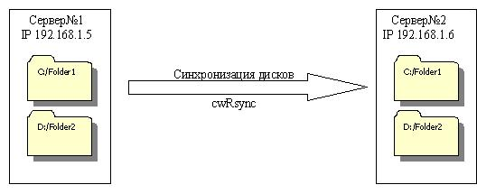
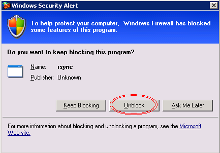
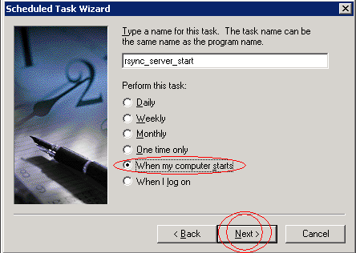

В процессе создания кластера стал вопрос: чем же можно обеспечить синхронизацию файлов и папок на отдельных узлах? После недолгих поисков всевозможных готовых решений наткнулся на известную утилиту, работающую под Unix – Rsync. У многих администраторов появилась необходимость синхронизировать каталоги между Unix-Windows серверами. Так получил жизнь проект cwRsynс. Суть этого проекта в том, что утилита Rsync запускается по Windows с помощью библиотеки cygwin.
В моем случае возможность взаимодействия с Unix серверами в перспективе очень радовала. Также отзывы админов о работе Rsync под Unix были очень положительными, и я решил попробовать.
В этой статье мы рассмотрим каким образом настраивается синхронизация жесткого диска с помощью cwRsynс. Русскоязычных статей по работе с cwRsync я не нашел – все дружно копируют четыре шага по установке, и не касаются работы и настройки. Основную массу информации я черпал из http://rsync.samba.org, ведь параметры запуска для Rsync и cwRsync остаются одинаковыми.
Принцип синхронизации с помощью cwRsync состоит в следующем: на главном сервере (в нашем случае Сервер№1) запускается демон cwRsync при старте системы. В конфиге указывается к каким ресурсам будет даваться доступ. Клиент конфигурируется на втором сервере (Сервер№2). С определенной периодичностью на втором сервере запускается клиент, который соединяется с сокетом первого сервера, после чего происходит синхронизация. Взаимодействие происходит по локальным IP адресам:

Пример: Схема синхронизации cwRsync.
1. Установка cwRsync.
Для начала необходимо скачать и установить утилиту cwRsync. Установщик можно скачать отсюда.
Нужно выбрать последнюю версию. Перед установкой стоит убедиться, что совместима с конфигами старой версии.
Нам необходимо установить его на все узлы кластера. Процесс установки совсем прост: все значения можно оставить по умолчанию. cwRsync установиться в c:\Program Files\cwRsync\.
После установки можно выполнить следующие рекомендации:
• Добавте $CYGWIN_INSTALL_PATH/bin/ в переменную окружения PATH
Панель управления -> Система -> Дополнительно -> Переменные окружения
• Решите проблему с не-ascii символами. Т.е. нужно с www.okisoft.co.jp/esc/utf8-cygwin/ скачать файл cygwin.dll и заменить им тот, что идет в комплекте с cwRsync.
• Для того чтобы файлы с не-ascii смволами в имене нормально передавались, добавте --iconv=. в опции при вызове rsync.
У меня после установки проблем с кодировкой либо работой не наблюдалось. Также далее при конфигурировании я использовал прямые пути. Поэтому рекомендации можно не выполнять.
2. Работа с cwRsync на Сервер№1:
Для начала необходимо создать конфиг. файл. Создадим в c:\Program Files\cwRsync\bin\ папки conf и log. В папке conf создадим файл rsyncd.conf следующего содержания:
#### rsyncd.conf file ####
uid = user_id
gid = user_id
use chroot = false # Даём разрешение использовать все диски а не только C. Если мы
# установим в true, то rsync сможет обращатся только к диску С.
hosts allow = 192.168.1.6 # Разрешаем обращаться только с Сервер№2
[drive_c] # Метка диска С
path = /cygdrive/c/
comment = this is system drive
read only = true
[drive_d] #Метка диска Д
path = /cygdrive/d/
comment = this is date drive
read only = true
#transfer logging = yes
#### End of configuration file ####
use chroot = yes – запуск rsync в chroot, для пущей безопасности; [drive_с] – назывние модуля; uid – должен соответствовать id владельца каталога, в который мы собираемся записывать; path – полный путь до каталога, в который будем записывать; list = no – не показывать секцию [push] в листинге; comment – комментарий; read only = false – открыть секцию на запись; hosts allow – разрешить доступ к секции push только для определённых адресов; auth users = push – разрешить доступ только пользователю push; secrets file – файл соответствия имени пользователя определённому паролю.
Примечание:
Мне так и не удалось заставить обменятся файлами клиент с сервером, если указать в path путь к папке. Если указать что-то типа path = /cygdrive/c/backup/ , клиент завершит работу ошибкой, а в логе появляется:
2009/01/06 13:27:35 [3748] name lookup failed for 127.0.0.1: Unknown server error
2009/01/06 13:27:35 [3748] connect from UNKNOWN (127.0.0.1)
2009/01/06 13:27:35 [3748] rsync: chdir / failed
: No such file or directory (2)
Зато когда указываешь имя папки в параметрах клиента, то всё работает.
Далее создадим bat файлы для запуска демона: создадим в папке conf файл rsync_server_start.bat с таким содержимым:
"C:\Program Files\cwRsync\bin\rsync.exe" --config "C:\Program Files\cwRsync\bin\conf\rsyncd.conf" --daemon --log-file "C:\Program Files\cwRsync\bin\log\rsyncservice.log" --address 192.168.1.5
--config rsyncd.conf – указываем, где находится файл конфигурации. --daemon – запуск демона --log-file – включение ведения лога --address – указываем , какой адрес слушать
Полный перечень возможных параметров:
--daemon run as an rsync daemon
--address=ADDRESS bind to the specified address
--bwlimit=KBPS limit I/O bandwidth; KBytes per second
--config=FILE specify alternate rsyncd.conf file
--no-detach do not detach from the parent
--port=PORT listen on alternate port number
--log-file=FILE override the "log file" setting
--log-file-format=FMT override the "log format" setting
--sockopts=OPTIONS specify custom TCP options
-v, --verbose increase verbosity
-4, --ipv4 prefer IPv4
-6, --ipv6 prefer IPv6
-h, --help show this help (if used after --daemon)
После запуска демона появится окно Windows Firewall и процесс в менеджере задач.

Windows Firewall: Блокирование rsync демона.
Необходима нажать Unblock. Если всё работает нормально, то нужно добавить запуск bat файла в Планировщик Задач:

Планировщик задач: Запуск демона cwRsync при старте сервера.
Таким образом, сервер cwRsync будет запускаться при старте узла.
3. Работа с cwRsync на Сервер№2:
Установим cwRsync на Сервер№2. Создадим в c:\Program Files\cwRsync\bin\ папки bat и log. В папке bat создадим следующий файл с именем sync_all.bat. В этом файле создадим записи для синхронизации каждой необходимой папки. Следует включать исключения для папок с логами и статистикой. Вот общий вид строки.
"C:\Program Files\cwRsync\bin\rsync.exe" -av --delete --exclude '/logs/' user_id @192.168.1.5::drive_c /Folder1/ "/cygdrive/c/Folder1/">"C:\Program Files\cwRsync\bin\log\Folder1.log"
Необходимо сформировать подобные строки для каждой папки, и указывать их одна за одной в этом файле.
Примечание:
Можно запускать с ключом –n при пробном запуске. С этим ключом отображается весь процесс, но реальные копирование, удаление, изменения не производятся.
Каждая запись состоит из следующих частей:
Обратите внимание на последний слеши в путях, так как они имеют значение для rsync. Если на конце исходной директории стоит «/», то это означает копирование содержимого директории; отсутствие слеша означает копирование директории и ее содержимого.
Если не указать /, то на клиент в папке создастся папка с файлами. Иначе просто её содержимое.
При первом запуске синхронизации на Cервер№2, также появится сообщения от брандмауэра Windows о блокировании Rsync. Необходимо нажать Unblock. После этого необходимо добавить бат файл в Планировщик Задач с запуском через каждые 10-20 минут либо другой, необходимый промежуток времени.
Чтобы посмотреть все допустимые параметры, нужно запустить rsync с опцией --help.